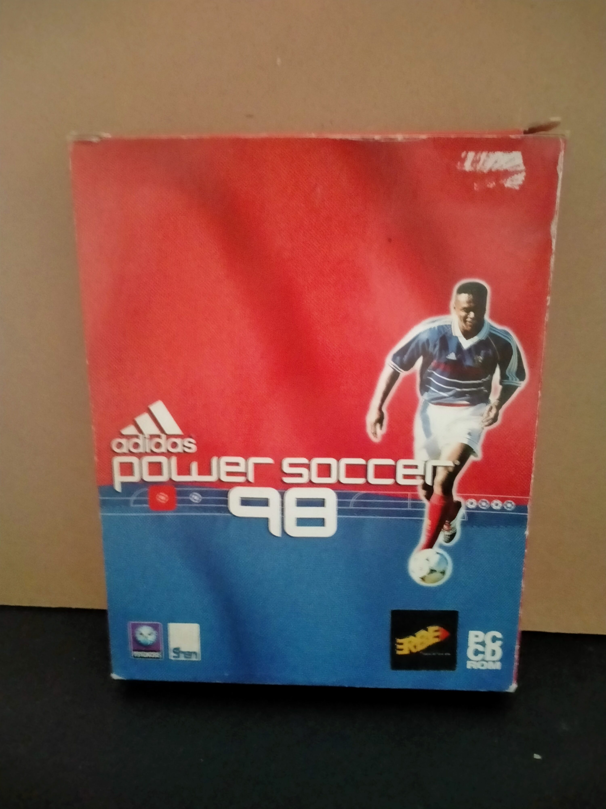

Ficha #000000
Adidas Power Soccer 98
Publicado en 1998 por Psygnosis y desarrollado por Gremlin Interactive, Adidas Power Soccer 98 es la última entrega de la serie de fútbol arcade que destacó por su jugabilidad rápida y animaciones fluidas. Incluye modos de exhibición, torneo y entrenamiento, además de repeticiones y comentarios. Aunque no contaba con licencias oficiales de ligas o clubes, ofrecía una experiencia arcade con estilo noventero, efectos exagerados y controles accesibles. Su edición en Big Box fue popular en Europa, especialmente en países como España y Alemania.
- Formato
- Big Box
- Plataforma
- Win95 Win98
- Género
- Deportes Fútbol
- Serie
- Todos Big Box
- Desarrollador
- Gremlin Interactive
- Distribuidor
- Psygnosis
- EAN
- —
Contenido de la edición
- Pendiente de documentación.
Preservación
- Protección
- Sin protección
- Formato recomendado
- ISO
- Jugable en virtualización
- Sí
ImgBurn o Alcohol 120% - Perfil Normal CD